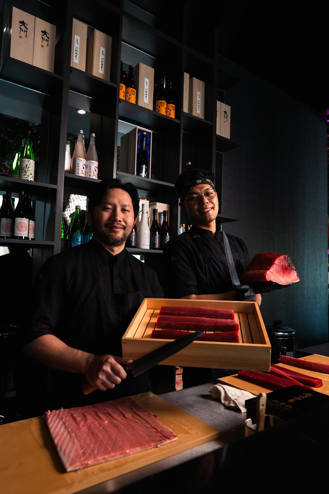

Pristine Nigiri & Sashimi
Sourced directly from certified waters. Featuring whole cuts of akami, medium fatty chutoro, decadent otoro with uni butter, and striped jack (shima aji) sliced with master yanagiba technique.
Explore The Sushi Bar →YUGENN brings an elevated energy to Charlotte’s South End, where contemporary Japanese dining meets transcendent culinary craft. Helmed by Executive Chef Boi Phomsopha and Executive Sous Chef Christopher Nguyen, YUGENN pairs pristine Toyosu market sashimi imports with Polanco Oscietra caviar service, Miyazaki A5 Wagyu, and rare Junmai Daiginjo sakes.

Rooted in traditional Japanese discipline, elevated by modern artistic expression.
Sourced directly from certified waters. Featuring whole cuts of akami, medium fatty chutoro, decadent otoro with uni butter, and striped jack (shima aji) sliced with master yanagiba technique.
Explore The Sushi Bar →Featuring Polanco Oscietra Grand Reserve Caviar Service ($125) with potato pavé, Hudson Valley foie gras with shoyu brown butter glaze ($38), and Miyazaki A5 Wagyu toasts.
Discover Caviar →An extensive library of rare Japanese Junmai Daiginjo sakes, artisanal Japanese craft beers, and modern craft cocktails like the Kyoto Spritz ($18) and Lotus Milk Punch ($20).
View Beverage Program →Join us in South End for an evening of sensory Japanese dining. Reserve your table or counter seating in advance via Tock.
Hours & Reservations →